CARINHO DA VIRGEM MARIA
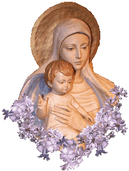
E por isso mesmo, são histórias que hoje se tornam difíceis de serem comprovadas, mas que na realidade, são absolutamente aceitas e acolhidas com o maior respeito e o melhor sentimento afetuoso por todos, principalmente se considerando que para DEUS nada é impossível. A magnânima Vontade Divina “providencia as coincidências e realiza os acontecimentos, segundo o Seu Poder e a Sua Santíssima e Incomensurável Vontade”.
É assim que existe uma lenda muito antiga sobre o nascimento do nome e da devoção a NOSSA SENHORA DAS NEVES, que muito embora, mesmo não se conseguindo apurar há séculos, a sua autenticidade histórica, é perfeitamente aceita e acolhida com simpatia, em todos os ambientes cristãos.
A lenda nasceu e criou raízes no pontificado do Papa Libério (352-366), e descreve que o senhor Giovanni, um fidalgo e fervoroso patrício romano junto com sua esposa, católicos conscientes e praticantes, já com a idade avançada e sem filhos, pensavam na possibilidade de doar a fortuna objetivando ajudar as obras da Igreja. Certo dia o casal sonhou que a VIRGEM MARIA com o MENINO JESUS ao colo lhes apareceu e pediu que eles construíssem uma Igreja dedicada a VIRGEM MARIA, no Monte Esquilino, e para facilitar, Ela marcaria o local de modo inconfundível, pois desejava ser venerada naquele lugar. Na noite do dia 4 para o dia 5 de Agosto do ano 352, em pleno verão italiano, nevou consideravelmente naquela região da cidade de Roma, ficando o local no Monte Esquilino, escolhido por NOSSA SENHORA, totalmente coberto de neve. Era o “sinal” prometido pela MÃE DE DEUS.
No dia seguinte, logo cedo, o casal se apressou em ir ao encontro do Papa para lhe comunicar o acontecimento. O Papa Libério ficou admirado, pois ele também havia tido aquele mesmo sonho, em que a VIRGEM MARIA manifestava o seu desejo, de que fosse construída uma Igreja no Monte Esquilino!
Por uma razão muito natural, o Papa quis conhecer o local escolhido por NOSSA SENHORA, e para lá se dirigiu, acompanhado de seu secretário pessoal.
A notícia se propagou rapidamente e quando Sua Santidade chegou ao lugar, já se encontrava diversas pessoas, que curiosas e cheias de admiração, contemplavam o local no Monte Esquilino, completamente coberto de neve.
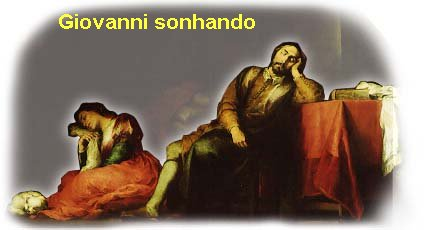
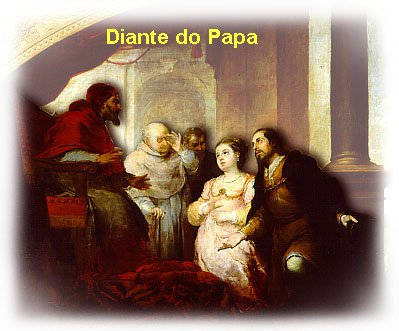
Na Antiguidade, consta do registro histórico, que utilizavam as Colinas do Esquilino para depósito do lixo da cidade romana, e na sequência dos anos, o lugar foi transformado em cemitério de escravos. Porém na época do Império Romano, o cemitério que já havia sido desativado e destruído, investiram no local preparando-o convenientemente, o qual passou a ser uma opção muito procurada, ou seja, o lugar preferido para construções luxuosas. Os nobres romanos escolheram aquele local para a construção de suas ricas mansões, as quais denominavam de “vilas”. E por isso mesmo, o povo passou a não gostar daquele lugar.
Mas, a intervenção Divina mudou a história daquele detestável recanto, providenciando a caída de uma impressionante nevada em pleno verão italiano. O Papa Libério marcou a área riscando a neve com o seu báculo e agilizou iniciativas, contratando os técnicos e especialistas para elaborarem o projeto da obra e começar a construção do templo. Desse modo, com a ajuda financeira do fidalgo Giovanni, construiu uma bela Igreja que recebeu o nome de “Basílica Liberiana” ou “Basílica Liberii”, a qual, possuía uma magnífica imagem da VIRGEM MARIA no altar central. Com a conclusão da obra, a região foi renovada e ganhou vida, pois as pessoas passaram a frequentar com assiduidade o novo templo cristão, dedicando uma veneração especial a NOSSA SENHORA, MÃE DE DEUS.
Entretanto, o material empregado não resistiu a ação do tempo e a partir do ano 430, o estado da Basílica era tão deplorável, que necessitava de ser totalmente restaurada.
No ano 431, no encerramento
do Concílio de Éfeso quando foi declarado o dogma de MARIA, MÃE DE DEUS, com a proclamação
da "Maternidade Divina da 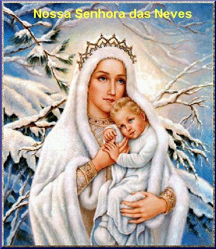
E como sempre, a VIRGEM MARIA agradeceu repleta de alegria pelo carinho e a devoção do povo, derramando muitas e preciosas bênçãos, alcançando de DEUS uma quantidade impressionante de graças em benefício de todos, especialmente para aqueles que buscavam e suplicavam fervorosamente a sua tão preciosa e eficaz intercessão.
Então, adquiriu-se o hábito de realizar procissões mensalmente, proporcionando a imagem da VIRGEM MARIA percorrer todas as ruas do bairro, passando diante das residências de todos os fieis, convidando-os ao amor a DEUS, derramando de seu olhar compassivo uma luz de esperança a todos os corações, principalmente aqueles que sofriam dificuldades e que atravessavam uma penosa e árida estrada no caminho existencial.
O movimento cristão era intenso, todos queriam rezar diante da imagem de NOSSA SENHORA DAS NEVES. E assim, o templo começou a ficar pequeno para atender a todos os fieis.
Na sequência dos anos, a Basílica foi sendo aumentada e provida de uma quantidade admirável de ornamentos, imagens, pisos de granito e mármore, que a embelezaram de modo marcante e universal, sendo hoje uma das mais belas e preciosas Basílicas Marianas em todo o mundo, passando o novo templo a ser denominado de BASÍLICA DE SANTA MARIA MAGGIORE (Santa Maria, a Maior), referindo-se a grandeza das virtudes e o imenso poder de intercessão da VIRGEM MARIA junto a DEUS.
Assim, o titulo de NOSSA SENHORA DAS NEVES, ou A VIRGEM BRANCA, ou SANTA MARIA A MAIOR, está ligado diretamente a BASILICA DE SANTA MARIA MAGGIORE, em Roma, onde a MÃE DE DEUS é fervorosamente venerada nos seus diversos títulos, e primordialmente, de NOSSA SENHORA DAS NEVES ou de SANTA MARIA, A MAIOR.
IMAGENS DA BASÍLICA DE SANTA MARIA MAGGIORE, OU BASÍLICA DE NOSSA SENHORA DAS NEVES
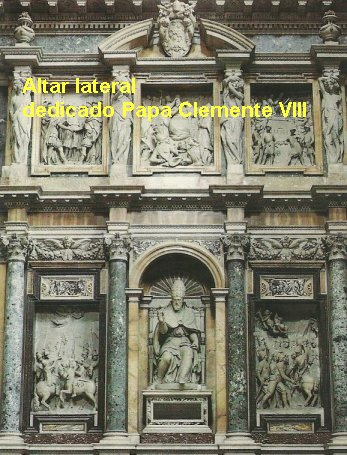
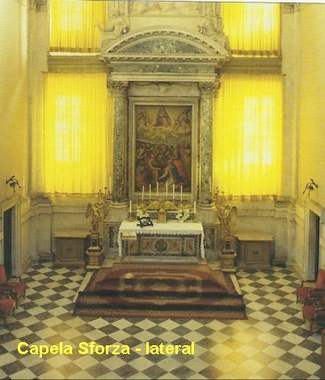
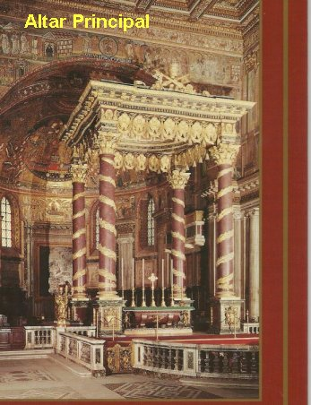
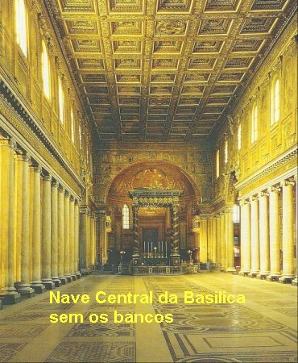
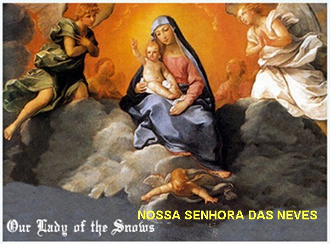
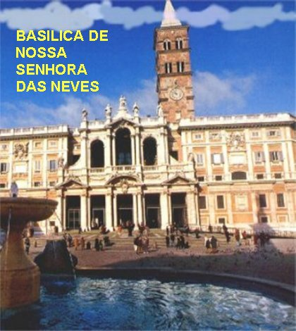
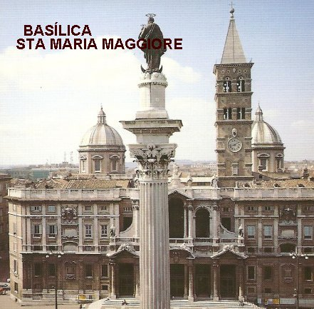